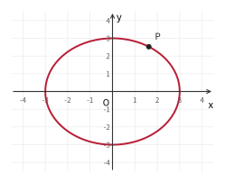
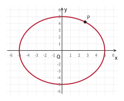
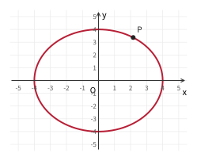

別冊練習問題 6 の解答 等速円運動の速さと加速度
(1) 点 \(P\) が \(x=3\cos 2t,\ y=3\sin 2t\) にしたがって動く。時刻 \(t\) における速さと加速度の大きさを求めよ。
位置を \(t\) で微分して速度を求める
\((\cos 2t)'=-2\sin 2t\)、\((\sin 2t)'=2\cos 2t\)。
\[\vec v=\left(\dfrac{dx}{dt},\dfrac{dy}{dt}\right)=\left(-6\sin 2t,\ 6\cos 2t\right)\]
速さを求める
速さは速度ベクトルの大きさ。
\[|\vec v|=\sqrt{6^2\sin^22t+6^2\cos^22t}\]\(6^2\) でくくり、\(\sin^2\theta+\cos^2\theta=1\) を使う。
\[=\sqrt{36\left(\sin^22t+\cos^22t\right)}=\sqrt{36}=6\]速度をさらに微分して加速度を求める
\[\vec\alpha=\left(\dfrac{d^2x}{dt^2},\dfrac{d^2y}{dt^2}\right)=\left(-12\cos 2t,\ -12\sin 2t\right)\]
加速度の大きさを求める
同様に \(\sin^2+\cos^2=1\) を使う。
\[|\vec\alpha|=\sqrt{12^2\left(\cos^22t+\sin^22t\right)}=12\]【答案】
\[\text{速さ }6,\ \text{加速度の大きさ }12\]答
(2) 点 \(P\) が \(x=5\cos t,\ y=5\sin t\) にしたがって動く。時刻 \(t\) における速さと加速度の大きさを求めよ。
位置を \(t\) で微分して速度を求める
\((\cos t)'=-\sin t\)、\((\sin t)'=\cos t\)。
\[\vec v=\left(\dfrac{dx}{dt},\dfrac{dy}{dt}\right)=\left(-5\sin t,\ 5\cos t\right)\]
速さを求める
速さは速度ベクトルの大きさ。
\[|\vec v|=\sqrt{5^2\sin^2t+5^2\cos^2t}\]\(5^2\) でくくり、\(\sin^2\theta+\cos^2\theta=1\) を使う。
\[=\sqrt{25\left(\sin^2t+\cos^2t\right)}=\sqrt{25}=5\]速度をさらに微分して加速度を求める
\[\vec\alpha=\left(\dfrac{d^2x}{dt^2},\dfrac{d^2y}{dt^2}\right)=\left(-5\cos t,\ -5\sin t\right)\]
加速度の大きさを求める
同様に \(\sin^2+\cos^2=1\) を使う。
\[|\vec\alpha|=\sqrt{5^2\left(\cos^2t+\sin^2t\right)}=5\]【答案】
\[\text{速さ }5,\ \text{加速度の大きさ }5\]答
(3) 点 \(P\) が \(x=4\cos 3t,\ y=4\sin 3t\) にしたがって動く。時刻 \(t\) における速さと加速度の大きさを求めよ。
位置を \(t\) で微分して速度を求める
\((\cos 3t)'=-3\sin 3t\)、\((\sin 3t)'=3\cos 3t\)。
\[\vec v=\left(\dfrac{dx}{dt},\dfrac{dy}{dt}\right)=\left(-12\sin 3t,\ 12\cos 3t\right)\]
速さを求める
速さは速度ベクトルの大きさ。
\[|\vec v|=\sqrt{12^2\sin^23t+12^2\cos^23t}\]\(12^2\) でくくり、\(\sin^2\theta+\cos^2\theta=1\) を使う。
\[=\sqrt{144\left(\sin^23t+\cos^23t\right)}=\sqrt{144}=12\]速度をさらに微分して加速度を求める
\[\vec\alpha=\left(\dfrac{d^2x}{dt^2},\dfrac{d^2y}{dt^2}\right)=\left(-36\cos 3t,\ -36\sin 3t\right)\]
加速度の大きさを求める
同様に \(\sin^2+\cos^2=1\) を使う。
\[|\vec\alpha|=\sqrt{36^2\left(\cos^23t+\sin^23t\right)}=36\]【答案】
\[\text{速さ }12,\ \text{加速度の大きさ }36\]答